Passed Open the Domů tab home
Expected The Domů tab is selected and its screen is shown
Actual The Domů tab is selected and its screen is shown
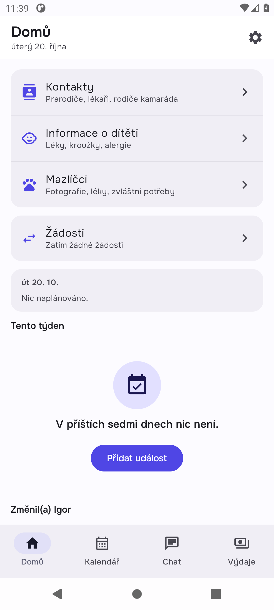
Passed Open the Domů tab home
Expected The Domů tab is selected and its screen is shown
Actual The Domů tab is selected and its screen is shown

Passed Open the Kalendář tab calendar
Expected The Kalendář tab is selected and its screen is shown
Actual The Kalendář tab is selected and its screen is shown
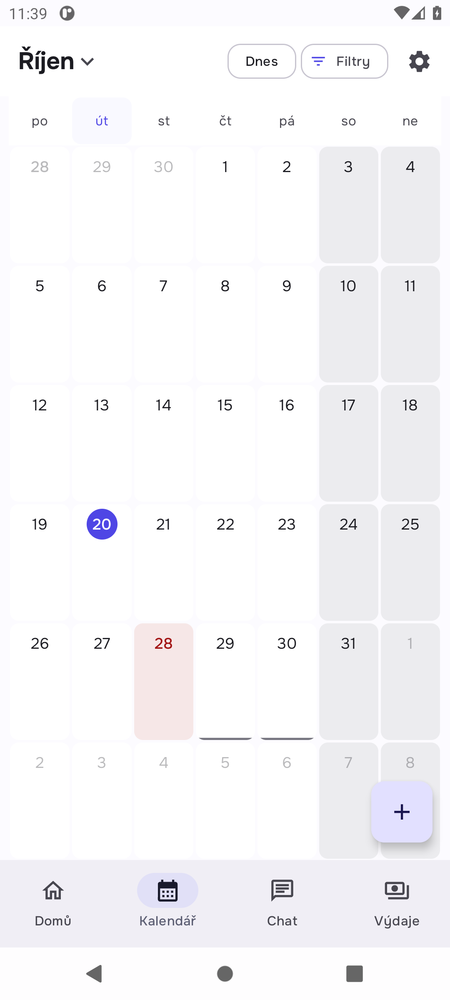
Passed Open the Chat tab chat
Expected The Chat tab is selected and its screen is shown
Actual The Chat tab is selected and its screen is shown
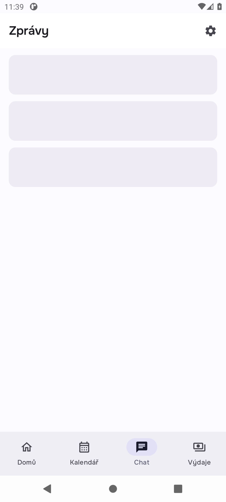
Passed Open the Výdaje tab expenses
Expected The Výdaje tab is selected and its screen is shown
Actual The Výdaje tab is selected and its screen is shown
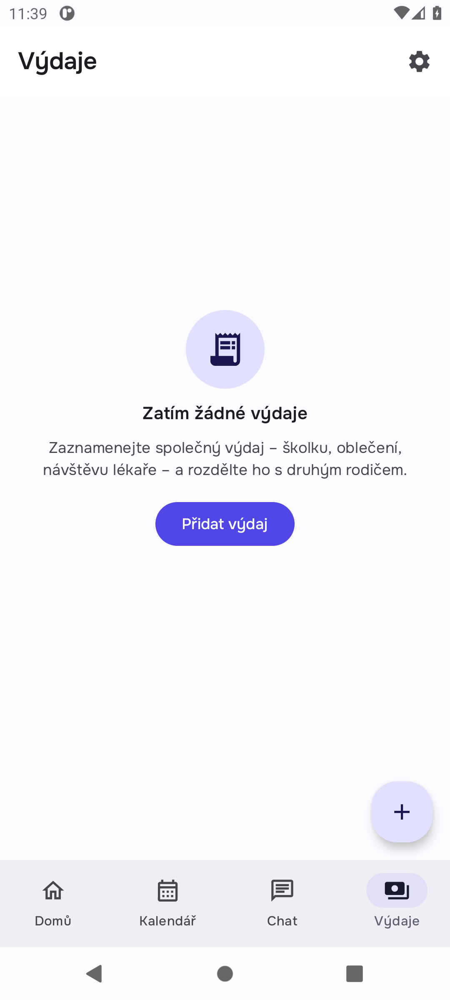
Passed Recognise amounts the way the app prints them money_pattern
Expected 1 290 Kč, 12,50 € and 1 290,00 CZK are amounts; "Lena 2026" is not
Actual 1 290 Kč, 12,50 € and 1 290,00 CZK are amounts; "Lena 2026" is not

Passed Pair Carol as a second co-parent and let each co-parent write in their own family setup
Expected Zuzana's phone knows two families; each family holds an event, an expense, a child and a message
Actual Zuzana's phone knows two families; each family holds an event, an expense, a child and a message
Passed Home's today card in the family with Igor home_today
Expected "Zubař Lena e33bbc" is on Home; "Plavání Max e33bbc" from the family with Carol is not
Actual "Zubař Lena e33bbc" is on Home; "Plavání Max e33bbc" from the family with Carol is not
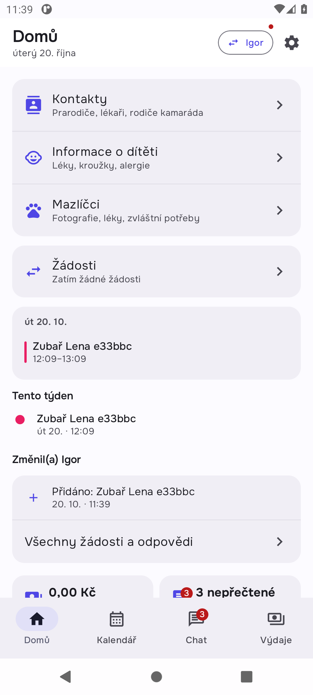
Passed The Expenses tab in the family with Igor expenses_list
Expected "Boty Lena e33bbc" is listed; "Kroužek Max e33bbc" is not
Actual "Boty Lena e33bbc" is listed; "Kroužek Max e33bbc" is not
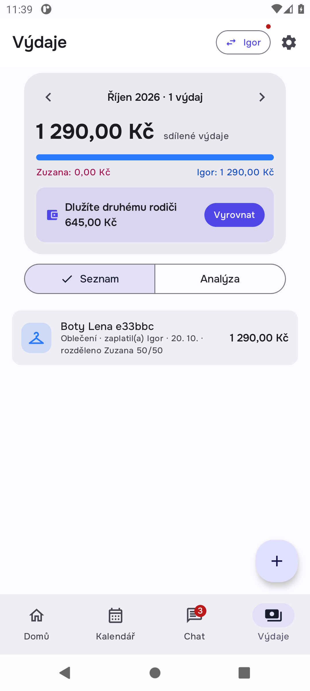
Passed The Chat tab in the family with Igor chat_thread
Expected Igor's message is in the thread; Carol's is not
Actual Igor's message is in the thread; Carol's is not
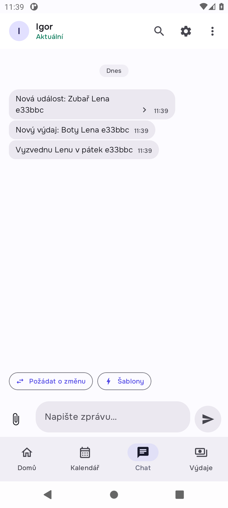
Passed The switcher says the other family has something new switcher_dot
Expected Home's family chip carries the dot for new messages in another family
Actual Home's family chip carries the dot for new messages in another family

Passed What reaches Igor's and Carol's phones after their syncs coparents_phones
Expected Igor has only his family's event, expense and child; Carol only hers
Actual Igor has only his family's event, expense and child; Carol only hers

Passed Every push names the family it belongs to pushes
Expected Every push to Zuzana names one of her two families, and each family has its own
Actual 10 pushes, each naming one of Zuzana's families
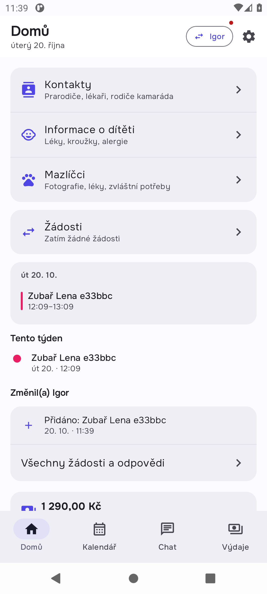
Passed Pair Carol as a second co-parent and let each co-parent write in their own family setup
Expected Zuzana's phone knows two families; each family holds an event, an expense, a child and a message
Actual Zuzana's phone knows two families; each family holds an event, an expense, a child and a message
Passed Switch to the family with Carol switch
Expected The switcher lists Carol's family and the app shows it
Actual The switcher lists Carol's family and the app shows it

Passed Home's today card in the family with Carol home_today
Expected "Plavání Max bcc874" is on Home; "Zubař Lena bcc874" from the family with Igor is not
Actual "Plavání Max bcc874" is on Home; "Zubař Lena bcc874" from the family with Igor is not
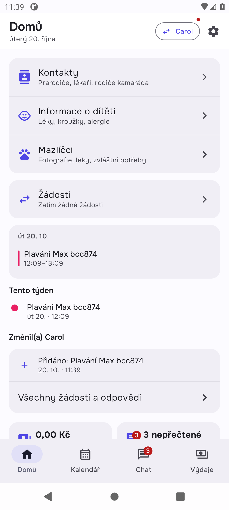
Passed The Expenses tab in the family with Carol expenses_list
Expected "Kroužek Max bcc874" is listed; "Boty Lena bcc874" is not
Actual "Kroužek Max bcc874" is listed; "Boty Lena bcc874" is not
Passed The Chat tab in the family with Carol chat_thread
Expected Carol's message is in the thread; Igor's is not
Actual Carol's message is in the thread; Igor's is not
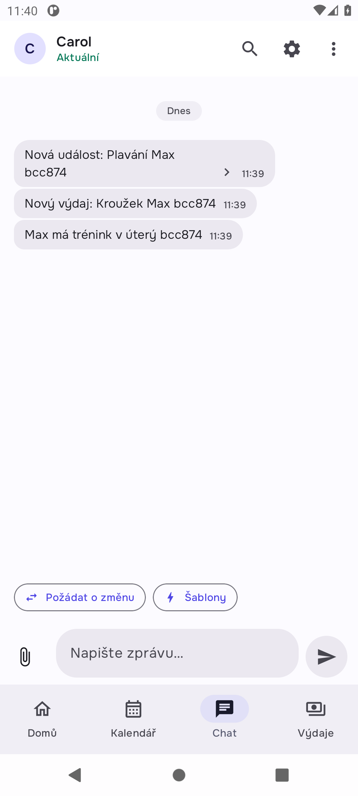
Passed The switcher says the other family has something new switcher_dot
Expected Home's family chip carries the dot for new messages in another family
Actual Home's family chip carries the dot for new messages in another family

Passed What reaches Igor's and Carol's phones after their syncs coparents_phones
Expected Igor has only his family's event, expense and child; Carol only hers
Actual Igor has only his family's event, expense and child; Carol only hers

Passed Every push names the family it belongs to pushes
Expected Every push to Zuzana names one of her two families, and each family has its own
Actual 10 pushes, each naming one of Zuzana's families
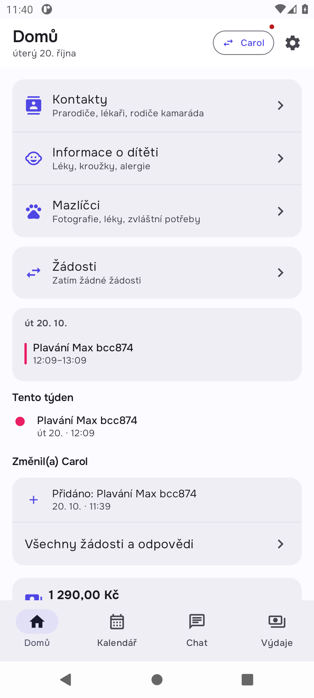